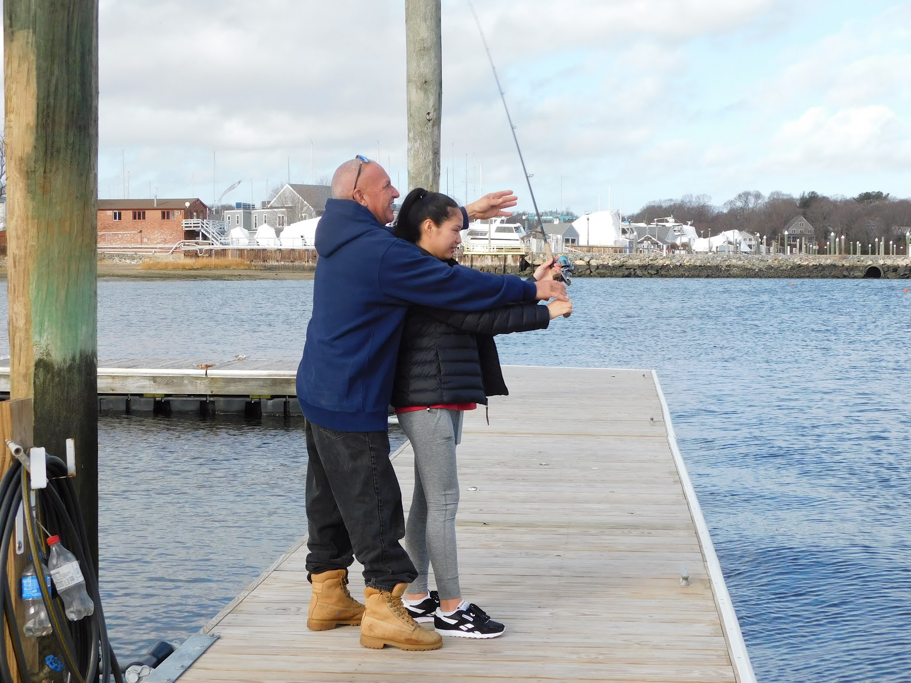
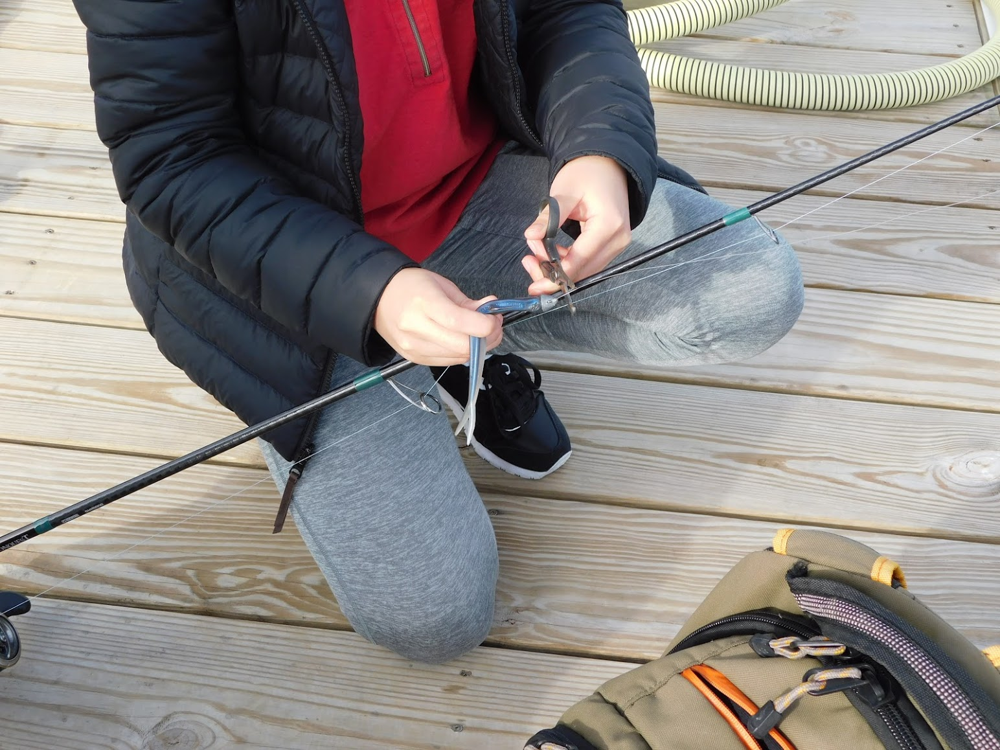

- - Docking practice for new boaters
- - Fishing regulations
- - Casting spinning rod
- - Lures of choice (plugs, jigs, hooks, artificials)
- - Jigging, bottom fishing, top water, live bait and trolling
- - Rod and reel guidance before you spend your money
- - Best knots
- - Tides and fishing
- - Hot spots for your favorite fish
- - What fish migrate through and when
- - Braid or mono?
- - New to the area (quick way to learn)
- - Local fishing tournaments
- - Apps that relate to fishing
Lessons
About Our Lessons
Fishing is no different than anything else we want to perfect like sports, musical instruments and even learning. Coaches are commonplace and will help to take you to the next level in fishing technique. You will learn in privacy and at your own pace through one on one coaching from shore, boat or even inside depending on the specific task. We offer a number of ideas on coaching topics and are open to specific customer requests.
What You Can Learn

